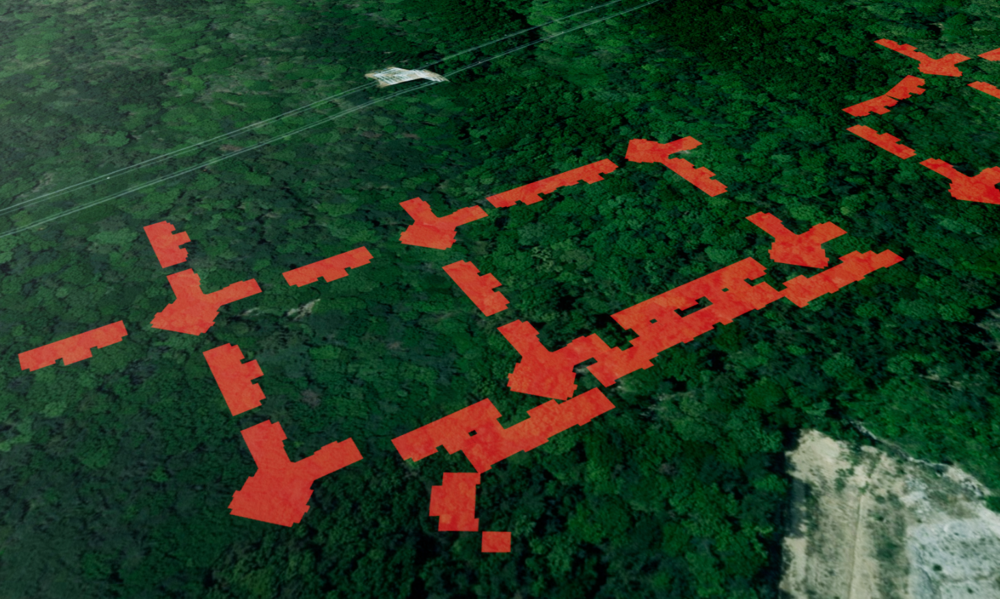
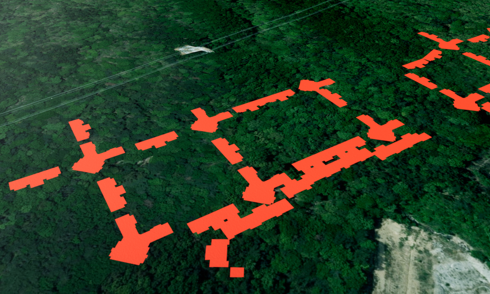
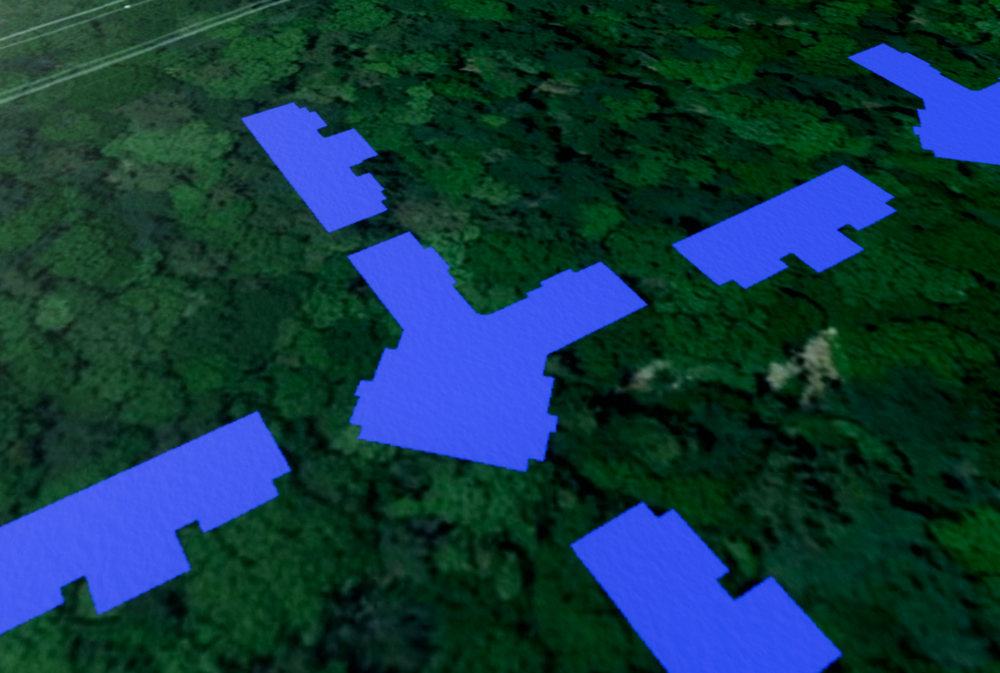
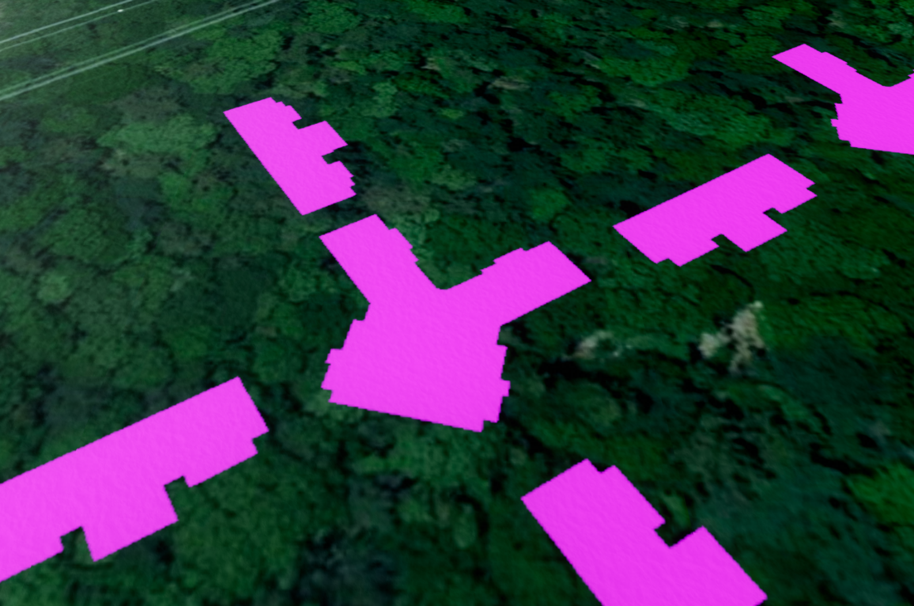
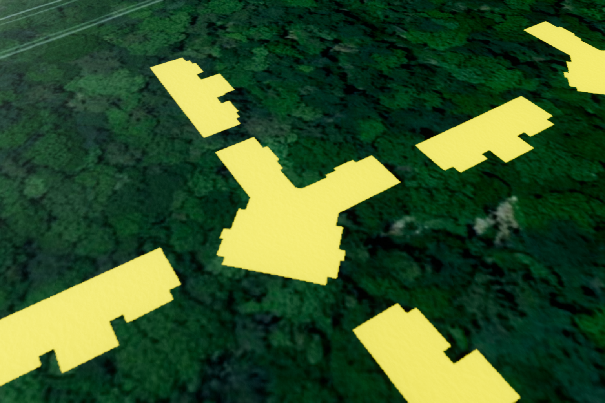
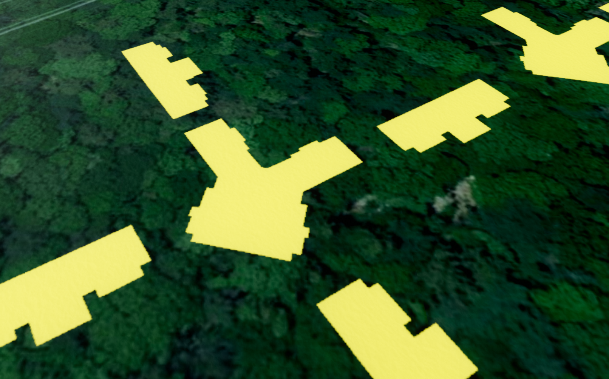
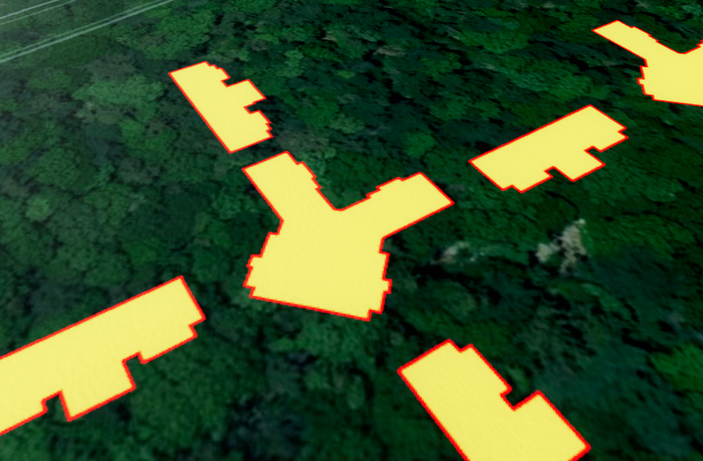
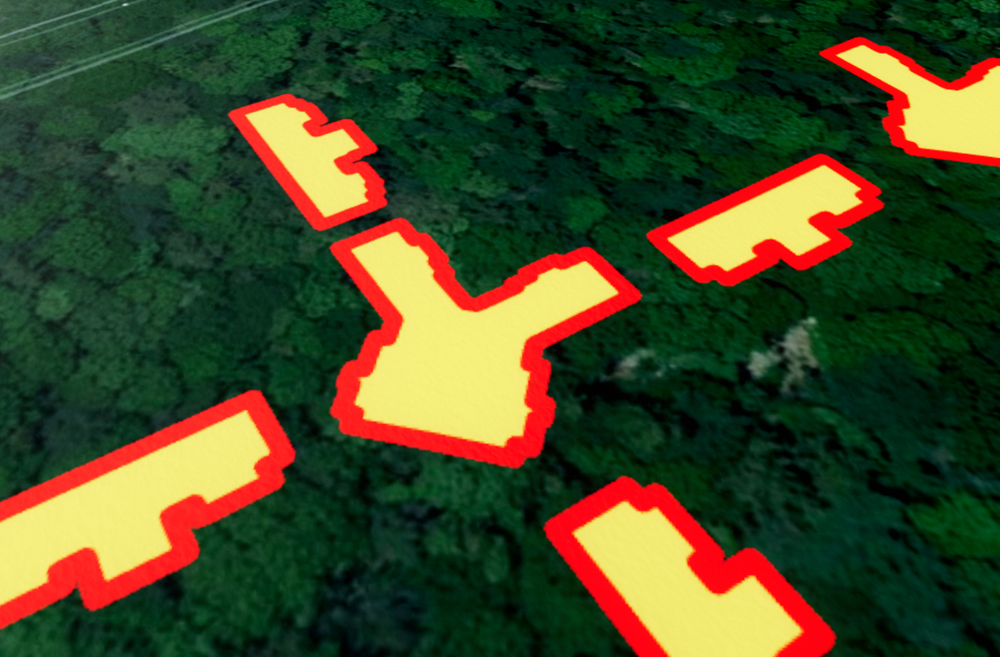
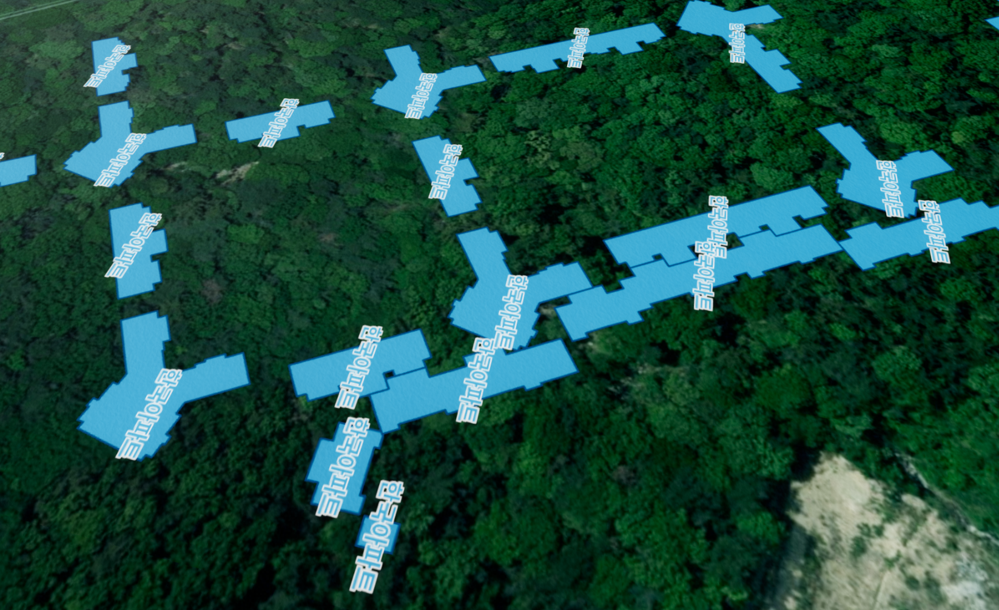

2D SHP 레이어 (U2dShpLayer)
목차
- 2D SHP 레이어 이해하고 시작하기
- SHP 파일 읽어 레이어에 표시하기
- 레이어 출력 제어하기
- 스타일과 라벨 설정하기
- 레이어 설정 조회하고 좌표계 바꾸기
- 레이어 제거하고 정리하기
- 좌표계와 표시 레벨 주의사항
U2dShpLayer는 SHP 파일에서 변환한 GeoJSON FeatureCollection을 3D 지표면 위에 2D 이미지로 표시하는 레이어입니다.
이 문서는 SHP 파일을 읽어 표시하는 흐름과 레이어의 생성, 출력 제어, 스타일 설정, 조회와 제거 API를 정리합니다.
1. 2D SHP 레이어 이해하고 시작하기
U2dShpLayer는 건물 외곽선, 행정 경계, 도로망처럼 SHP 형식으로 보유한 벡터 데이터를 3D 모델로 세우지 않고 지표면 타일 위에 그려서 표시할 때 사용합니다.
건물 높이를 이용해 3D 형상으로 세우려면 지도 출력하기 - 3D Shp 지도를 참고하고, 코드에서 직접 만든 점·선·면을 표시하려면 2D 벡터 레이어 - 2D 벡터 레이어 이해하고 시작하기를 참고합니다.
- SHP(Shapefile): 점, 선, 면의 좌표를 담은
.shp, 좌표계 정보를 담은.prj, 속성 테이블을 담은.dbf가 같은 이름으로 한 세트를 이루는 벡터 데이터 형식입니다.- FeatureCollection: 도형(
geometry)과 속성(properties)을 가진 Feature 여러 건을features배열로 묶은 GeoJSON 객체입니다.- OpenLayers: 브라우저 지도 렌더러입니다.
U2dShpLayer는 내부에서 OpenLayers로 Feature를 그린 뒤 그 결과를 지표면 타일의 이미지로 사용합니다.
데이터는 다음 순서로 레이어까지 전달됩니다.
- 브라우저의
FileReader로.shp,.prj,.dbf파일을 읽습니다. GeOnDT.parser.UShpParser가 파일 내용을 GeoJSON 도형과 속성으로 변환하고combine()으로FeatureCollection을 만듭니다.U2dShpLayer.addFeatureCollection()이sourceCRS좌표를crs좌표로 변환해 OpenLayers Feature로 등록합니다.- 앱(U3dApp)이 지표면 타일을 그릴 때 등록된 Feature가 타일 이미지로 렌더링됩니다.
API
new GeOnDT.image.U2dShpLayer(options) : SHP에서 변환한 FeatureCollection을 지표면에 표시할 레이어를 생성하는 생성자
매개변수
options(object) : 레이어 생성 옵션. 모든 속성을 생략할 수 있으며name지정을 권장options.name(string) : 앱에서 레이어를 찾을 때 사용할 고유 이름. 생략하면 GUID를 자동 생성options.sourceCRS(string) :addFeatureCollection()에 전달할 GeoJSON 좌표계. 기본값:EPSG:4326options.crs(string) : 화면에 표시할 때 사용할 대상 좌표계. 기본값:EPSG:3857options.minLevel(number) : 레이어를 표시하기 시작하는 최소 지도 레벨.0이상의 정수. 기본값:0options.maxLevel(number) : 레이어를 표시하는 마지막 지도 레벨.minLevel이상의 정수. 기본값:19options.transparent(boolean) : 레이어 이미지에 투명 처리를 적용할지 여부.false이면 채우기 투명도가 반영되지 않음. 기본값:falseoptions.style(Partial<U2dShpStyle>) : 기본 스타일에서 바꿀 속성만 담은 표시 설정. 속성 목록은 스타일과 라벨 설정하기 참고options.labelFunction(function(U2dShpFeature): string) : Feature마다 표시할 라벨 문자열을 반환하는 함수. 생략 가능
minLevel이 maxLevel보다 크거나 레벨이 0 이상의 정수가 아니면 RangeError가 발생합니다.sourceCRS와 crs는 비어 있지 않은 문자열이어야 하며 내부에서 앞뒤 공백을 제거하고 대문자로 정규화합니다.
API
U3dApp.addLayer(layer) : 생성한 레이어를 앱에 등록하는 함수
매개변수
layer(U3dLayer) : 앱에 등록할 2D SHP 레이어. 필수
반환값
return(U3dLayer | undefined) : 전달한 레이어. 같은 이름의 레이어가 이미 있으면 경고만 남기고 등록하지 않으며 이때도 전달한 레이어를 그대로 반환하므로, 등록 여부는app.getLayerByName()으로 확인
API
U3dApp.showLayer(name, show) : 등록한 레이어를 화면에 표시하거나 숨기는 비동기 함수
매개변수
name(string) : 표시 상태를 바꿀 레이어 이름. 필수show(boolean) :true이면 표시하고false이면 숨김. 기본값:true
반환값
return(Promise<{result: string, content: U3dLayer}> | false) : 표시 또는 숨김이 끝난 시점에 완료되는 Promise. 이름이 없거나 지도가 준비되지 않았으면false를 반환하고, 이름에 해당하는 레이어가 없으면 거부(reject)됨
1. 앱과 이미지 지도 준비하기
이 문서의 예제는 다음과 같이 생성한 app과 표시가 끝난 이미지 지도 레이어를 전제로 합니다.layerInfo.image.vworldsaturl은 실행 예제가 사용하는 위성 영상 타일 주소이며, 사용하는 타일 서비스 주소로 바꿉니다.
const app = new GeOnDT.U3dAPP({containername: 'map'});
app.setHomePosition(127.0, 37.5, 1800, 0, 45);
app.updateHomePosition();
const baseLayer = new GeOnDT.image.U3dImageXYZLayer({
name: 'satellite',
baseurl: layerInfo.image.vworldsaturl,
reverseY: true
});
app.addLayer(baseLayer);
await baseLayer;
app.setNameBaseLayer('satellite');
await app.showLayer('satellite', true);
2. 빈 2D SHP 레이어 생성하기
레이어를 먼저 만들어 앱에 등록하고, 데이터는 뒤에서 addFeatureCollection()으로 전달합니다.
채우기 투명도를 화면에 반영하려면 transparent를 true로 지정합니다.
const shpLayer = new GeOnDT.image.U2dShpLayer({
name: '2d-shp',
sourceCRS: 'EPSG:4326',
crs: 'EPSG:3857',
minLevel: 0,
maxLevel: 19,
transparent: true,
style: {
useFill: true,
fill: '#3399cc',
fillOpacity: 0.35,
useStroke: true,
stroke: '#0f4c75',
width: 2
}
});
app.addLayer(shpLayer);
await app.showLayer('2d-shp', true);
name은 앱 안에서 레이어를 구분하는 이름입니다.
뒤에서 app.getLayerByName('2d-shp')나 app.removeLayer('2d-shp')처럼 레이어를 다시 찾을 때 사용하므로 직접 지정하는 편이 안전합니다.
2. SHP 파일 읽어 레이어에 표시하기
UShpParser는 FileReader가 읽은 결과를 담은 객체를 입력으로 받습니다..shp와 .dbf는 readAsArrayBuffer()로 읽은 ArrayBuffer를, .prj는 readAsText()로 읽은 문자열을 result 속성에 담아 전달합니다.
API
UShpParser.parseShp(shpFile, projFile) : .shp 내용을 위경도 좌표의 GeoJSON 도형 목록으로 변환하는 함수
매개변수
shpFile({result: ArrayBuffer}) :.shp파일을ArrayBuffer로 읽은 결과를 담은 객체. 필수projFile({result: string} | string) :.prj파일을 문자열로 읽은 결과를 담은 객체 또는EPSG:5179와 같은 EPSG 코드..prj파일이 없을 때는 데이터의 실제 좌표계 코드를 전달. 필수
반환값
return(Array<object> | undefined) : 원본 좌표계에서EPSG:4326으로 변환된 GeoJSON 도형 목록.shpFile이 없으면undefined
projFile에 문자열을 전달하면 GeOnDT.UDEF.Prj에 등록된 좌표계 정의를 사용합니다.EPSG:4326, EPSG:3857, EPSG:5179, EPSG:5181, EPSG:5186, EPSG:5187, EPSG:2097, EPSG:5173부터 EPSG:5177이 등록되어 있습니다.
API
UShpParser.parseDbf(dbfFile, encoding) : .dbf 속성 테이블을 Feature별 속성 객체 목록으로 변환하는 함수
매개변수
dbfFile({result: ArrayBuffer}) :.dbf파일을ArrayBuffer로 읽은 결과를 담은 객체. 필수encoding(string) : 속성 문자열의 인코딩. 한글 속성이 깨지면euc-kr을 지정. 기본값:utf8
반환값
return(Array<object> | undefined) : 도형 순서와 같은 순서의 속성 객체 목록.dbfFile이 없거나 내용이 없으면undefined
API
UShpParser.combine(arr) : 도형 목록과 속성 목록을 합쳐 GeoJSON FeatureCollection을 만드는 함수
매개변수
arr([Array<object>, Array<object> | undefined]) :[도형 목록, 속성 목록]순서의 배열. 속성 목록이undefined이면 빈 속성으로 처리. 필수
반환값
return(U2dShpFeatureCollection) :type이FeatureCollection이고features배열을 가진 GeoJSON 객체
API
U2dShpLayer.addFeatureCollection(data) : FeatureCollection을 sourceCRS에서 crs로 변환해 레이어에 등록하는 함수
매개변수
data(U2dShpFeatureCollection) :type이FeatureCollection이고features배열을 가진 GeoJSON 객체. 필수
반환값
return(U2dShpLayer) : 현재 레이어
addFeatureCollection()은 기존 Feature를 새 입력으로 교체합니다.
여러 SHP 파일을 함께 표시하려면 파일마다 별도의 U2dShpLayer를 만듭니다.data가 FeatureCollection 형식이 아니면 TypeError가 발생합니다.
함수는 동기적으로 반환되며 화면에는 다음 타일 렌더링 시점부터 반영됩니다.
API
U3dApp.fitLayerExtent(layername, useFly, offsetZ, leftrotate, downrotate) : 레이어의 전체 범위가 보이도록 지도 화면을 이동하는 비동기 함수
매개변수
layername(string) : 화면에 맞출 레이어 이름. 필수useFly(boolean) : 이동 애니메이션 사용 여부. 기본값:falseoffsetZ(number) : 카메라 타겟과 카메라 사이의 거리(m). 기본값:0leftrotate(number) : 카메라 좌우 각도(도). 기본값:0downrotate(number) : 카메라 상하 각도(도). 기본값:0
반환값
return(Promise<boolean>) : 이동이 끝나면 완료되는 Promise. 이름에 해당하는 레이어가 없거나 Feature 범위가 없으면 거부(reject)됨
1. 파일 읽기 함수 만들기
파일 확장자에 따라 .prj는 텍스트로, 나머지는 ArrayBuffer로 읽습니다.UShpParser가 요구하는 result 속성과 함께 확장자와 기본 이름을 반환합니다.
function readShapefilePart(file) {
return new Promise(function (resolve, reject) {
const dotIndex = file.name.lastIndexOf('.');
const name = file.name.slice(0, dotIndex);
const ext = file.name.slice(dotIndex + 1).toLowerCase();
if (!['shp', 'prj', 'dbf'].includes(ext)) {
reject(new Error('지원하지 않는 파일 형식입니다: ' + file.name));
return;
}
const reader = new FileReader();
reader.onload = function () {
resolve({result: reader.result, ext: ext, name: name});
};
reader.onerror = function () {
reject(new Error('파일을 읽지 못했습니다: ' + file.name));
};
if (ext === 'prj')
reader.readAsText(file);
else
reader.readAsArrayBuffer(file);
});
}
async function readShapefileSet(files) {
const parts = await Promise.all(files.map(readShapefilePart));
const fileSet = {name: parts[0].name};
parts.forEach(function (part) {
if (part.name !== fileSet.name)
throw new Error('.shp, .prj, .dbf 파일 이름이 서로 같아야 합니다.');
fileSet[part.ext] = part;
});
if (!fileSet.shp)
throw new Error('.shp 파일을 반드시 선택해야 합니다.');
return fileSet;
}
2. 선택한 SHP 파일을 레이어에 표시하기
<input type="file" id="shp-files" accept=".shp,.prj,.dbf" multiple> 요소에서 같은 이름의 파일 세트를 선택하면 파싱 결과를 앞에서 만든 shpLayer에 등록합니다..prj가 없으면 데이터의 실제 좌표계 코드를 parseShp()에 전달합니다.parseShp()의 결과는 항상 위경도 좌표이므로 레이어의 sourceCRS는 EPSG:4326을 사용합니다.
const fileInput = document.querySelector('#shp-files');
fileInput.addEventListener('change', async function (event) {
const files = Array.from(event.target.files || []);
if (files.length === 0) return;
fileInput.disabled = true;
try {
const fileSet = await readShapefileSet(files);
const parser = new GeOnDT.parser.UShpParser();
const geometries = parser.parseShp(fileSet.shp, fileSet.prj || 'EPSG:5179');
if (!geometries || geometries.length === 0)
throw new Error('SHP 파일에 표시할 도형이 없습니다.');
const attributes = fileSet.dbf ? parser.parseDbf(fileSet.dbf, 'euc-kr') : undefined;
const featureCollection = parser.combine([geometries, attributes]);
shpLayer.addFeatureCollection(featureCollection);
await app.fitLayerExtent(shpLayer.getName(), true, 800, 0, 45);
console.log(fileSet.name + '.shp 표시 완료: ' + featureCollection.features.length + '개 Feature');
} catch (error) {
console.error(error instanceof Error ? error.message : String(error));
} finally {
fileInput.disabled = false;
fileInput.value = '';
}
});
fitLayerExtent()는 addFeatureCollection()이 계산한 전체 Feature 범위를 사용합니다.
Feature가 없는 FeatureCollection을 등록하면 범위가 만들어지지 않아 Promise가 거부되므로 위 예제처럼 try...catch 안에서 호출합니다.
3. 레이어 출력 제어하기
레이어의 표시 여부는 앱의 showLayer()로 바꾸고, 표시되는 지도 레벨 범위는 setMinLevel()과 setMaxLevel()로 조절합니다.
API
U3dLayer.show(show, refresh) : 레이어의 표시 여부를 직접 설정하는 함수
매개변수
show(boolean) :true이면 표시하고false이면 숨김. 필수refresh(boolean) : 설정 후 타일을 다시 그릴지 여부. 기본값:true
app.showLayer()는 로딩이 끝나는 시점을 Promise로 알려 주고, layer.show()는 즉시 반환합니다.
이후 작업을 이어서 해야 하면 app.showLayer()를 사용합니다.
API
U3dLayer.getVisible() : 레이어의 현재 표시 여부를 반환하는 함수
반환값
return(boolean) : 표시 중이면true, 숨김 상태이면false.app.showLayer()와layer.show()로 바꾼 상태가 반영됨
API
U2dShpLayer.getMinLevel() : 레이어가 표시되기 시작하는 최소 지도 레벨을 반환하는 함수
반환값
return(number) : 최소 지도 레벨
API
U2dShpLayer.setMinLevel(minLevel) : 최소 지도 레벨을 변경하고 화면을 갱신하는 함수
매개변수
minLevel(number) : 새 최소 지도 레벨.0이상의 정수이며 현재maxLevel이하. 필수
반환값
return(U2dShpLayer) : 현재 레이어
API
U2dShpLayer.getMaxLevel() : 레이어가 표시되는 마지막 지도 레벨을 반환하는 함수
반환값
return(number) : 최대 지도 레벨
API
U2dShpLayer.setMaxLevel(maxLevel) : 최대 지도 레벨을 변경하고 화면을 갱신하는 함수
매개변수
maxLevel(number) : 새 최대 지도 레벨.0이상의 정수이며 현재minLevel이상. 필수
반환값
return(U2dShpLayer) : 현재 레이어
API
U3dLayer.refresh() : 레이어의 타일 상태와 캐시를 초기화하고 다시 그리는 함수
1. 레이어 숨기고 다시 표시하기
// 숨깁니다. 등록된 Feature는 그대로 유지됩니다.
app.showLayer('2d-shp', false);
// 다시 표시하고 로딩이 끝날 때까지 기다립니다.
await app.showLayer('2d-shp', true);
버튼 하나로 표시와 숨김을 번갈아 바꾸려면 getVisible()로 현재 상태를 읽어 반대 값을 전달합니다.
const nextVisible = !shpLayer.getVisible();
await app.showLayer('2d-shp', nextVisible);
console.log(nextVisible ? '표시' : '숨김');
2. 표시 레벨 범위 조절하기
넓은 지역을 볼 때 Feature가 너무 작게 겹쳐 보이면 minLevel을 올려 확대한 상태에서만 표시합니다.
setter는 현재 값과 같으면 화면을 갱신하지 않고, 범위를 벗어나면 RangeError를 발생시킵니다.
try {
shpLayer.setMinLevel(12).setMaxLevel(19);
console.log('표시 레벨:', shpLayer.getMinLevel(), '~', shpLayer.getMaxLevel());
} catch (error) {
console.error(error.message);
}
4. 스타일과 라벨 설정하기
스타일은 레이어 전체의 Feature에 공통으로 적용됩니다.
생성자 style과 setStyle()은 바꿀 속성만 전달하면 나머지는 현재 값을 유지합니다.
- 채우기(fill): Polygon 내부의 색상과 투명도입니다.
- 외곽선(stroke): 도형 경계선의 색상과 두께입니다.
- 라벨(label): Feature 위에 표시하는 문자열입니다. 모든 Feature에 같은 문자열을 표시하는 고정 라벨과 Feature마다 다른 문자열을 만드는
labelFunction이 있습니다.
U2dShpStyle의 속성과 기본값은 다음과 같습니다.
색상은 CSS 색상 문자열을 사용하고 두께는 화면 픽셀 단위입니다.
useFill(boolean) : Polygon 내부를 채울지 여부. 기본값:truefill(string) : 채우기 색상. 기본값:#3399CCfillOpacity(number) : 채우기 투명도.0은 완전 투명,1은 완전 불투명. 기본값:0.2useStroke(boolean) : 외곽선을 표시할지 여부. 기본값:falsestroke(string) : 외곽선 색상. 기본값:#000000width(number) : 외곽선과 라벨 테두리 두께(px).0이상. 기본값:5label(string) : 모든 Feature에 공통으로 표시할 고정 라벨. 빈 문자열이면 표시하지 않음. 기본값:''font(string) : 라벨에 사용할 CSS font 문자열. 기본값:bold 20px sans-seriflabelFill(string) : 라벨 글자 색상. 생략하면fill색상을 사용labelStroke(string) : 라벨 글자 테두리 색상. 기본값:white
width가 0 미만이거나 fillOpacity가 0부터 1 범위를 벗어나면 RangeError가 발생합니다.
채우기 투명도를 화면에 반영하려면 레이어 생성 시 transparent: true가 필요합니다.


API
U2dShpLayer.setStyle(style) : 전달한 속성을 현재 스타일에 병합하고 등록된 모든 Feature에 다시 적용하는 함수
매개변수
style(Partial<U2dShpStyle>) : 현재 값에서 바꿀 채우기, 외곽선 또는 라벨 속성. 필수
반환값
return(U2dShpLayer) : 현재 레이어
API
U2dShpLayer.getStyle() : 현재 스타일의 복사본을 반환하는 함수
반환값
return(U2dShpStyle) : 호출자가 변경해도 레이어에 영향을 주지 않는 스타일 복사본
API
U2dShpLayer.setLabelFunction(labelFunction) : Feature별 라벨 생성 함수를 교체하고 등록된 Feature의 라벨을 갱신하는 함수
매개변수
labelFunction(function(U2dShpFeature): string | undefined) : OpenLayers Feature를 받아 표시할 문자열을 반환하는 함수.undefined를 전달하면 Feature별 라벨을 해제. 필수
반환값
return(U2dShpLayer) : 현재 레이어
API
U2dShpLayer.getLabelFunction() : 현재 Feature별 라벨 생성 함수를 반환하는 함수
반환값
return(function(U2dShpFeature): string | undefined) : 설정된 라벨 생성 함수. 없으면undefined
1. 레이어 전체 스타일 변경하기
setStyle()은 객체가 아닌 값을 전달하면 TypeError를 발생시킵니다.
Feature가 등록되어 있으면 스타일을 다시 적용한 뒤 타일을 갱신합니다.
shpLayer.setStyle({
useFill: true,
fill: '#ff3b30',
fillOpacity: 0.5,
useStroke: true,
stroke: '#ffff00',
width: 3
});
console.log('현재 스타일:', shpLayer.getStyle());
fill만 바꾸면 다른 속성은 유지된 채 채우기 색상만 달라집니다.



useStroke를 true로 바꾸면 stroke 색상의 외곽선이 표시되고, width를 키우면 외곽선이 굵어집니다.



2. 공통 라벨 표시하기
label에 문자열을 넣으면 모든 Feature 위에 같은 문자열을 표시합니다.
빈 문자열을 다시 전달하면 라벨을 지웁니다.
shpLayer.setStyle({
label: '건물',
font: 'bold 14px sans-serif',
labelFill: '#ffffff',
labelStroke: '#000000'
});
// 공통 라벨 해제
shpLayer.setStyle({label: ''});

3. 속성값으로 Feature별 라벨 표시하기
labelFunction이 받는 Feature는 OpenLayers Feature이므로 getProperties()로 .dbf에서 읽은 속성을 조회할 수 있습니다.GeOnDT.modules.d.ts의 U2dShpFeature 타입은 getStyle()과 setStyle()만 선언한 최소 계약이며, 런타임에 전달되는 객체는 getProperties()를 포함한 OpenLayers Feature입니다.labelFunction이 설정되어 있으면 고정 label보다 우선합니다.
shpLayer.setLabelFunction(function (feature) {
const properties = feature.getProperties();
return properties.BLD_NM ? String(properties.BLD_NM) : '';
});
// Feature별 라벨 해제
shpLayer.setLabelFunction(undefined);
BLD_NM은 예시 속성 이름이며 .dbf에 실제로 존재하는 필드 이름으로 바꿉니다.
속성이 없는 Feature는 빈 문자열을 반환해 라벨을 표시하지 않습니다.
5. 레이어 설정 조회하고 좌표계 바꾸기
앱에 등록한 레이어는 이름으로 다시 찾을 수 있고, 레이어의 현재 설정은 getParam()으로 한 번에 확인합니다..prj가 없어 좌표계를 잘못 지정한 경우 데이터를 다시 등록하지 않고 setSourceCRS()로 바로잡을 수 있습니다.
API
U3dApp.getLayerByName(name) : 이름이 같은 레이어를 찾아 반환하는 함수
매개변수
name(string) : 찾을 레이어 이름. 필수
반환값
return(U3dLayer | undefined) : 찾은 레이어. 없으면undefined
API
U2dShpLayer.getParam() : 현재 레이어 설정과 스타일 복사본을 담은 객체를 반환하는 함수
반환값
return(U2dShpLayerParam) : 현재 설정 객체return.name(string) : 레이어 이름return.minLevel(number) : 최소 지도 레벨return.maxLevel(number) : 최대 지도 레벨return.transparent(boolean) : 투명 처리 적용 여부return.sourceCRS(string) : 원본 데이터 좌표계return.crs(string) : 화면 표시 좌표계return.style(U2dShpStyle) : 현재 스타일의 복사본return.labelFunction(function | undefined) : Feature별 라벨 생성 함수
API
U2dShpLayer.getSourceCRS() : 원본 데이터 좌표계 식별자를 반환하는 함수
반환값
return(string) :EPSG:4326과 같은 좌표계 식별자
API
U2dShpLayer.setSourceCRS(sourceCRS) : 원본 데이터 좌표계를 바꾸고 등록된 Feature를 새 좌표계 기준으로 다시 변환하는 함수
매개변수
sourceCRS(string) : 새 원본 좌표계 식별자. 비어 있지 않은 문자열. 필수
반환값
return(U2dShpLayer) : 현재 레이어
API
U2dShpLayer.getCRS() : 화면 표시에 사용하는 대상 좌표계 식별자를 반환하는 함수
반환값
return(string) : 대상 좌표계 식별자
API
U2dShpLayer.setCRS(crs) : 대상 좌표계를 바꾸고 등록된 Feature를 새 좌표계로 다시 변환하는 함수
매개변수
crs(string) : 새 대상 좌표계 식별자. 비어 있지 않은 문자열. 필수
반환값
return(U2dShpLayer) : 현재 레이어
API
U2dShpLayer.getBoundingBox() : 등록된 전체 Feature의 범위를 월드 좌표 바운딩 박스로 반환하는 함수
반환값
return(THREE.Box3 | undefined) : 전체 Feature의 월드 좌표 범위. Feature가 없거나 레이어가 아직 렌더링되지 않았으면undefined
1. 이름으로 레이어 찾아 설정 확인하기
getLayerByName()의 반환 타입은 모든 레이어의 공통 타입인 U3dLayer입니다.getParam()처럼 U2dShpLayer에만 있는 메서드를 호출하려면 instanceof로 레이어 종류를 먼저 확인합니다.
const layer = app.getLayerByName('2d-shp');
if (!(layer instanceof GeOnDT.image.U2dShpLayer)) {
console.warn('2d-shp 이름의 2D SHP 레이어가 등록되어 있지 않습니다.');
} else {
const param = layer.getParam();
console.log('좌표계:', param.sourceCRS, '->', param.crs);
console.log('표시 레벨:', param.minLevel, '~', param.maxLevel);
console.log('채우기 색:', param.style.fill);
}
getParam()이 반환하는 객체와 style은 모두 복사본이므로 값을 바꿔도 레이어에는 반영되지 않습니다.
설정을 바꿀 때는 각 setter를 사용합니다.
2. 원본 좌표계 바로잡기
이미 등록한 데이터가 엉뚱한 위치에 표시되면 원본 좌표계를 다시 지정합니다.setSourceCRS()는 마지막에 전달한 FeatureCollection을 새 좌표계로 다시 변환하고 화면을 갱신합니다.
try {
shpLayer.setSourceCRS('EPSG:5186');
await app.fitLayerExtent(shpLayer.getName());
} catch (error) {
console.error('좌표계 변경 후 화면 이동에 실패했습니다.', error);
}
parseShp()를 거친 데이터는 이미 EPSG:4326으로 변환되어 있으므로 setSourceCRS()는 GeoJSON을 직접 만들어 등록한 경우에 주로 사용합니다.
6. 레이어 제거하고 정리하기
데이터를 바꿀 때, 레이어를 앱에서 없앨 때, 화면에서만 감출 때의 범위가 다릅니다.
| 호출 | 정리되는 내용 |
|---|---|
addFeatureCollection(data) | 기존 Feature를 새 데이터로 교체. 레이어는 유지 |
app.showLayer(name, false) | 화면에서 숨김. Feature와 레이어는 유지 |
app.removeLayer(name) | 앱에서 레이어를 제거하고 dispose()까지 호출 |
layer.dispose() | Feature 참조와 OpenLayers 자원을 해제. 앱에 등록된 레이어는 app.removeLayer()를 사용 |
API
U3dApp.removeLayer(name) : 앱에 등록된 레이어를 제거하고 자원을 해제하는 함수
매개변수
name(string | U3dLayer) : 제거할 레이어 이름 또는 레이어 객체. 필수
API
U2dShpLayer.dispose() : 레이어가 보유한 Feature 참조와 OpenLayers 레이어를 해제하고 상위 레이어 자원을 정리하는 함수
1. 다른 SHP 파일로 교체하기
같은 레이어에 새 FeatureCollection을 등록하면 이전 Feature는 자동으로 제거됩니다.
좌표계나 이름이 다른 레이어가 필요하면 기존 레이어를 제거한 뒤 새로 만듭니다.
// 같은 레이어에서 데이터만 교체
shpLayer.addFeatureCollection(newFeatureCollection);
// 레이어를 제거하고 새로 생성
app.removeLayer('2d-shp');
const nextLayer = new GeOnDT.image.U2dShpLayer({
name: '2d-shp',
sourceCRS: 'EPSG:4326',
transparent: true
});
app.addLayer(nextLayer);
await app.showLayer('2d-shp', true);
nextLayer.addFeatureCollection(newFeatureCollection);
newFeatureCollection은 SHP 파일 읽어 레이어에 표시하기와 같은 방법으로 만든 FeatureCollection입니다.
2. 레이어 완전히 제거하기
app.removeLayer()는 내부에서 dispose()를 호출하므로 별도로 dispose()를 부르지 않습니다.
제거한 뒤에는 레이어 변수 참조를 정리해 다시 사용하지 않도록 합니다.
app.removeLayer('2d-shp');
shpLayer = undefined;
dispose()된 레이어에 addFeatureCollection()이나 setStyle()을 호출하지 않습니다.
다시 표시하려면 새 레이어를 생성합니다.
7. 좌표계와 표시 레벨 주의사항
1. sourceCRS는 파서 결과 기준으로 지정하기
| 데이터 경로 | sourceCRS |
|---|---|
UShpParser.parseShp()로 변환한 SHP | 항상 EPSG:4326 |
| 위경도 좌표의 GeoJSON을 직접 등록 | EPSG:4326 |
| 평면 직각 좌표의 GeoJSON을 직접 등록 | 데이터의 실제 좌표계, 예: EPSG:5186 |
parseShp()는.prj또는 전달한 EPSG 코드를 기준으로 좌표를EPSG:4326으로 변환해 반환합니다. 이때.prj나 EPSG 코드가 데이터와 다르면 파서 결과 자체가 어긋나므로setSourceCRS()로 고칠 수 없고 올바른 코드로 다시 파싱해야 합니다..prj가 없는 국내 SHP는EPSG:5179,EPSG:5186,EPSG:5181중 하나인 경우가 많습니다. 표시 위치가 어긋나면 이 세 코드를 순서대로 확인합니다.- 좌표 배열 순서는
[위도, 경도]가 아니라 **[경도, 위도]**입니다. - 표시 좌표계
crs는 기본값EPSG:3857을 그대로 사용합니다.
2. 표시되지 않을 때 확인할 항목
- 지형 또는 이미지 지도 레이어가 표시 중인지 확인합니다. 2D SHP 레이어는 지표면 타일 위에 그려집니다.
- 현재 지도 레벨이
minLevel이상maxLevel이하인지 확인합니다. app.showLayer(name, true)를 호출했는지 확인합니다.featureCollection.features.length가0보다 큰지 확인합니다.useFill과useStroke가 모두false이거나fillOpacity가0이면 도형이 보이지 않습니다.getStyle()로 현재 값을 확인합니다.- 채우기 투명도가 반영되지 않으면 레이어 생성 옵션
transparent가true인지 확인합니다. - 한글 속성이 깨져 라벨이 잘못 표시되면
parseDbf()의encoding을euc-kr로 지정합니다.